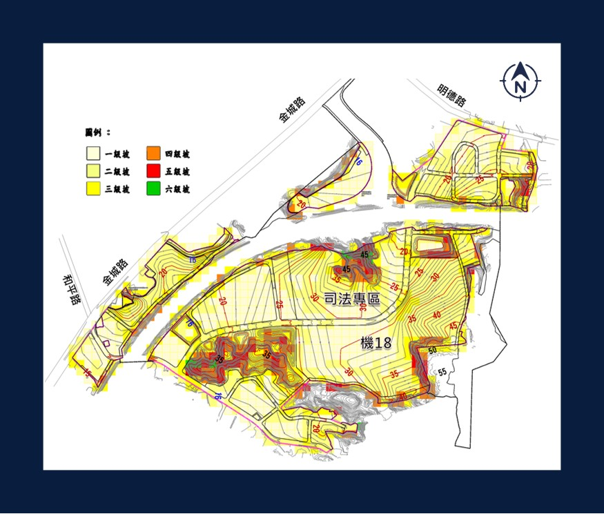
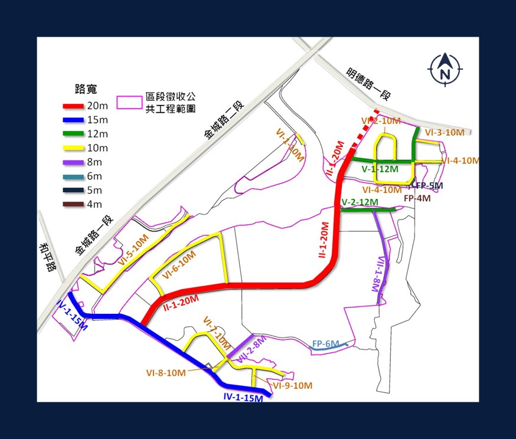
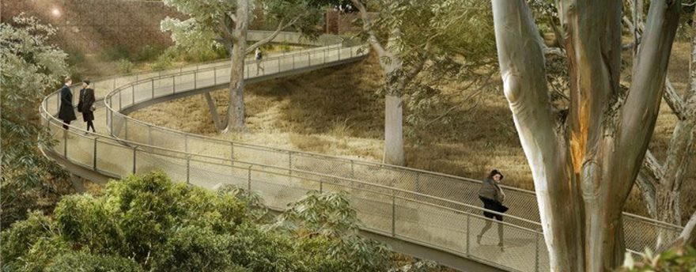
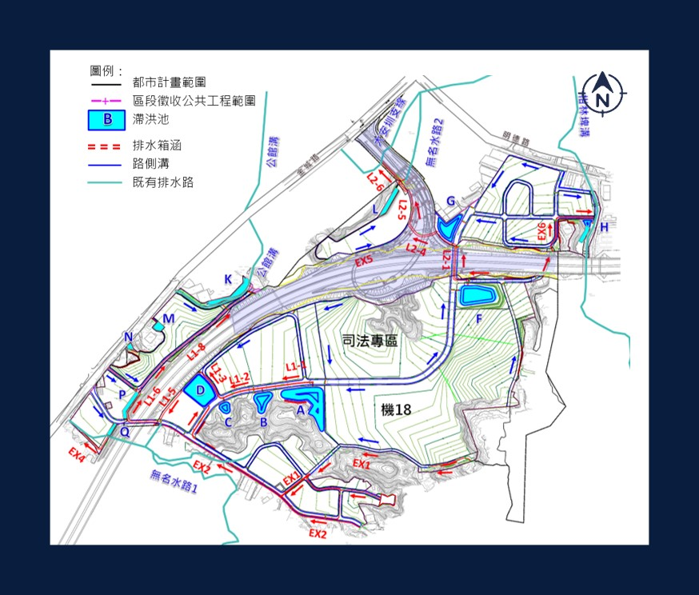
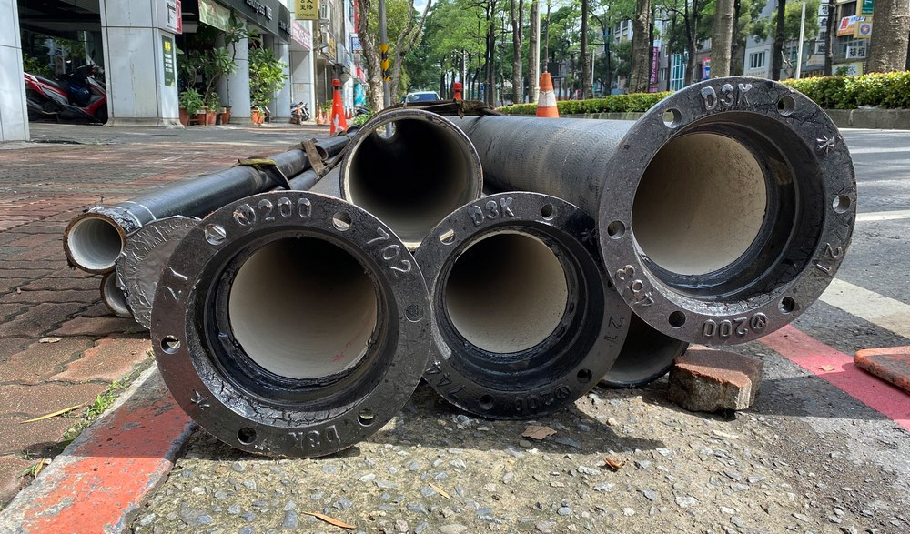
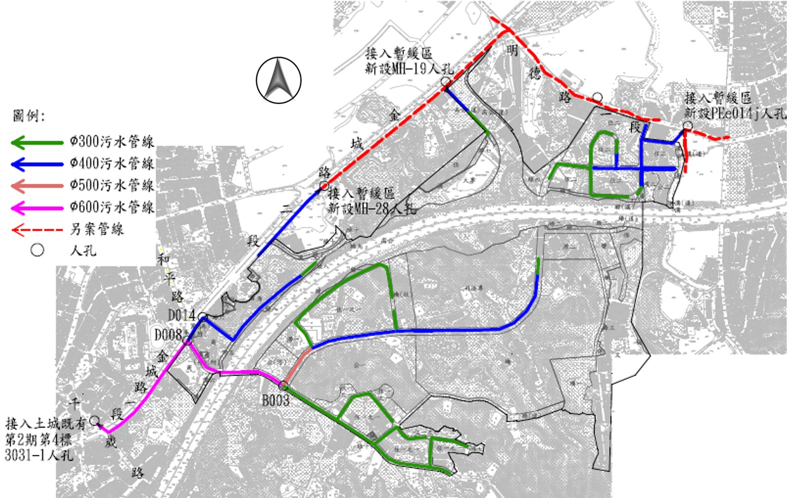
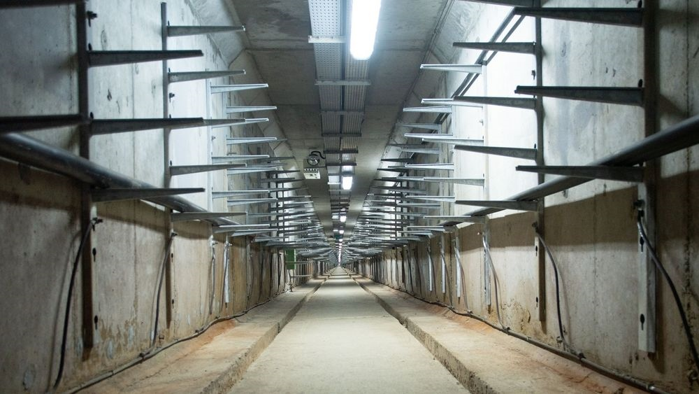
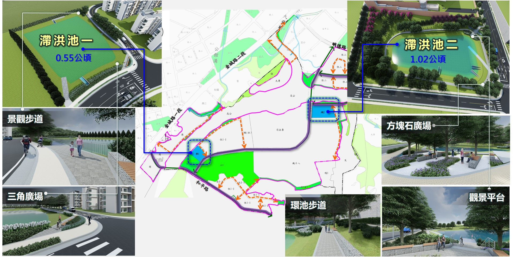
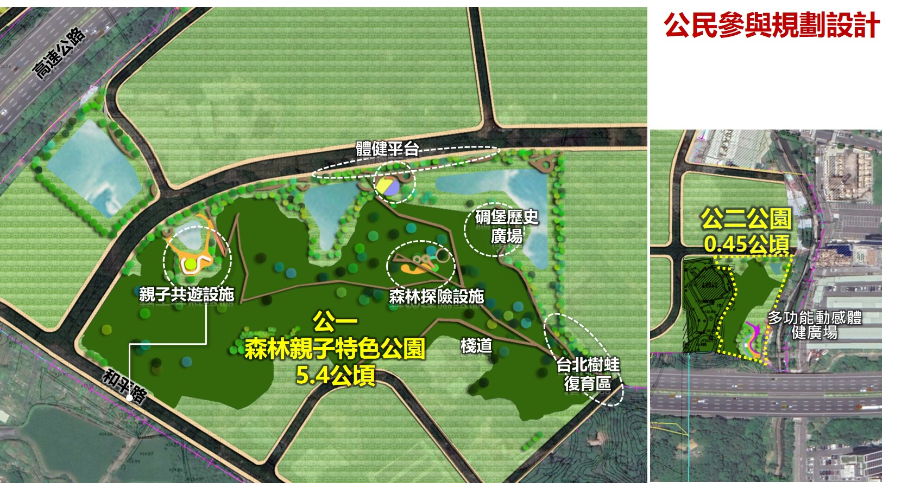
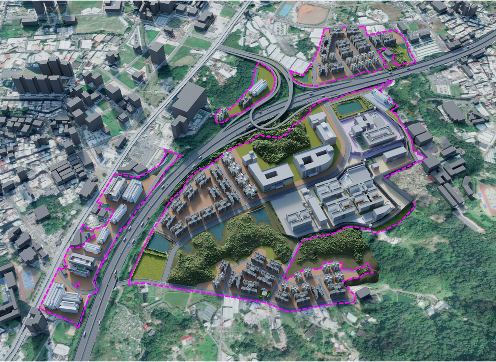

核心理念
以尊重既有自然環境資源為原則，擬定工程設計構想，提出最佳綠色基盤設計方案，達到人與自然環境和諧共處，期使開發工程不論在規劃、設計、施工以及後續運轉等各階段，皆能符合綠色、韌性、永續的實質內涵要求。

整地工程
順應地形地貌、以挖填平衡為原則
除局部區位外，整地後建築坵塊坡度呈三級坡以下且與道路平順銜接為原則
部分區位山丘量體過大，保持原地形不予整地

道路工程
主要道路20M、15M，銜接金城路及明德路
搭配建築退縮空間設置植栽帶/人行/自行車道，創造連續且健康舒適之通行空間
設計依據營建署市區道路及附屬工程設計規範(111)、交通部公路路線設計規範(109)

擋土工程及邊坡穩定設施
配合整地成果，於現有地形高差處設置必要擋土及邊坡穩定設施，提升整體邊坡穩定性
以擋土工程及邊坡保護設施克服用地限制

排水水保工程
配合道路系統設置排水設施，並配合地形設13座滯洪沉砂池，調節開發後增加逕流
開發後雨水排放至公館溝及大安圳支線
設計重現期：區內排水設施25年、滯洪設施50年

自來水管線
自來水管線
工程
採分區管網設計，利於維修及供水穩定
管材選用延性鑄鐵管，提升水公司接管後之營運管理績效
因區域供水壓力不足，設置管中加壓站以穩定全區供水

污水管線工程
配合整地後地勢，採重力方式收集
污水收集管線銜接市區既有污水下水道系統
區外管線全數使用推管辦理

共同管道工程
採用共同管道整合高低壓配電、電信、寬頻、交控等弱電系統，埋設於道路下
20M計畫道路採共同管道支管洞道形式，並增加納入自來水管線，其他道路採用共同管道纜線管路形式
預留用戶連接管，避免人行道二次開挖

景觀工程
工程標景觀工程為公園外之公共設施景觀設計，包括綠地、滯洪池及道路等
依環評要求及地方企盼，公園設計將納入民眾參與，且公一公園將開發為「森林親子特色公園」，設計作業自113年3月啟動辦理

公共設施景觀設計-滯洪池

公園景觀設計構想
